Whats Up with Marc Brown
Where did the idea of Arthur come from?
It was a bedtime story that I told my son Tolin on a very bad day. I had just lost my teaching job in Boston and came home that night and just wanted to collapse and he said “tell me a bedtime story” and I was really coming up empty so I asked “so what should I tell you a story about?” and he said “tell me a story about a weird animal” and so I guess I kind of starting thinking alphabetically and aardvark came to mind. So then he wanted to know his name and then he asked me to draw him a picture, and I thought this is so much fun, why can’t I do this for a job? And at the time I was sort of doing freelance work for textbook companies in Boston and one of my editors there said “you should really see this editor at the Atlantic Monthly Press she likes to discover new authors and her name is Emily Macleod”.
I got an appointment with her and I was kind of terrified. I remember putting my portfolio together from art school and I took it in and she looked through it and she said “Ah, you have to let go of all this and forget all this technique you learned” and I thought, “What?! I spent all these years in art school learning this technique!” and she said “concentrate on the characters and their emotions and their expressions” because I took this little story I had, this little bedtime story about an aardvark to her and she said “it needed a lot of work” and she was so right because what I was doing was using two paragraphs to do what maybe one good sentence in a picture book could do. Because I came to understand that when you write a picture book, its its like balancing a scales you have the pictures on one side words on the other side and you’re constantly trying to bring them together and you want to come up with the most efficient way possible to uh tell your story and use your pictures to do what the words can’t do and the words should be doing what the pictures can’t do. So that was a really good lesson, and after about six months of revision she said “I think we may have a book here” and uh I cannot look at that first book “About Arthur” because it’s to me so raw it’s like going to a party in my underwear. Because it looks to me unfinished but it was a great learning experience.
He said “tell me a story about a weird animal” and so I guess I kind of starting thinking alphabetically
and
aardvark came to mind.
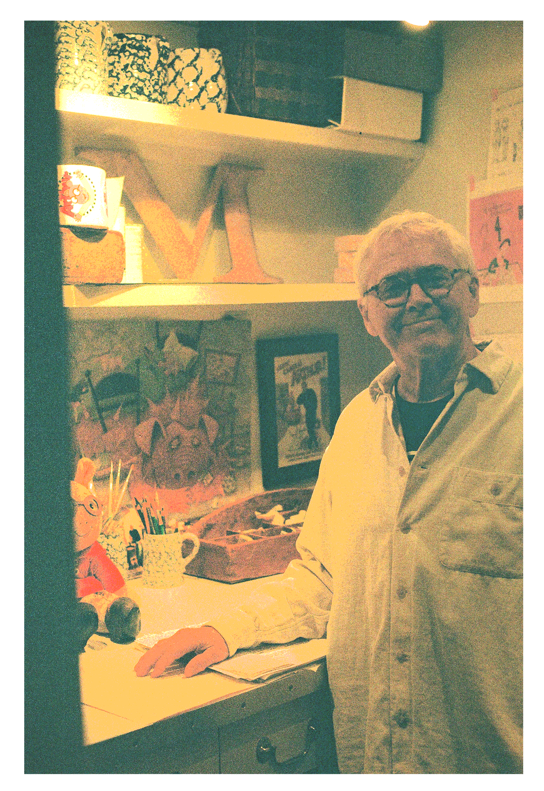
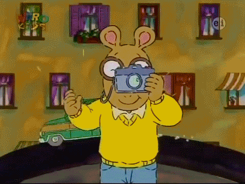
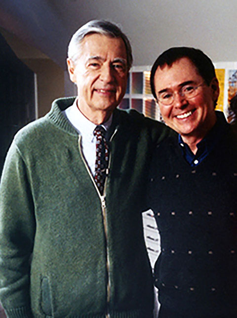
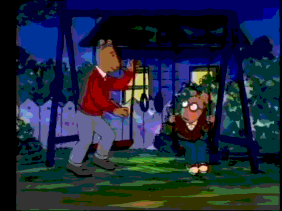
Where did the TV show happen?
Oh that sort of came out of the blue. I got this call from WDBH (a Boston based TV station), they wanted to talk to me about a television show and I had turned down—they uh I had two previous television authors from network television and ya know I had no control over what would happen with my characters so I decided I didn’t want to work with them. But PBS was doing something really unique and wanted to use television and animation two very seductive forms of reaching children to make children want to read. And I thought, “This is good!” so we started to wok on this idea. And ya know I came to television feeling very insecure but I quickly learned that making a television show is not that unlike making a picture book. Because you’re using um, the same things. And ya know I had some valuable background in theater when I was in high school and college and I found that that was a really wonderful preparation for television because with a tv show you’re costuming, you’re characters, you’re designing the sets, you’re writing the script. Uh, with tv you have the addition of sound and movement which is very exciting. And I also found I could reach kids with subject matter that I couldn’t get get a publisher to write a or publish a picture book such as “asthma”, “disaster at a school after 9/11”….
And that was a really great thing about television and early on I think it was the first episode where we had a guest star and we had Fred Rogers as our guest star. And that was very exciting because he was uh real hero of mine and remains one of the most important people in my life because you know he used television to be helpful to kids and parents. And that’s what I wanted this show to do as well with Arthur. And I remember my first meeting with Fred and I went to Pittsburgh, where he’s located, and he did all his shows and I missed the plan that morning. And I was stuck in a traffic jam in Boston and by the time I got to the airport I was having a a nervous breakdown. I went to the airline front desk and uh the plane had left and I I was almost in tears and I said “I gotta get to Pittsburgh! Fast! I have an appointment with Mr. Rogers!”. And the woman at the desk looked up at me and said, “THE Mr. Rogers?” I said, “Yes!” and she said, “well!” and she started clicking away on her computer. And before I knew it I was on the next plane to Pittsburgh in first class! Which was a gift.
So, I got to Fred’s studios. And everyone was out to lunch and so the woman at the front desk said, “You can wait in Fred’s office, just go down to the end of the hall and you can wait there” So I did and I opened the door and there was Fred sitting on the sofa in his little office that looked like a suburban dad with shag carpeting and the walls covered in awards, every square inch was covered in awards! And Fred said, “Oh Marc, sit down, I’ve been waiting for you”. And it was like all the tears into the morning faded away, so I sat down.
So we talked and the first thing we talked about was death. Because he had just lost- I think his name was John Costas who had played piano on his show from the very beginning and everyday Fred went to the “Y” and swam with a few friends. And he had just come from the “Y” and he said “Today I was there and the man who hands us the towels said, “Oh where’s your friend Mr. Costas?” and Fred said, “He went to heaven”. And the guy said, “Oh, I wonder which one of you will be next!” and Fred said, “probably me!”. And Fred was so healthy. He was the same weight as he was in high school and every day for lunch he ate an apple and he swam every day and so it seemed so unfair that he passed away when he did at an early age from stomach cancer of all things. But we talked about death and I brought him a book that Lori and I did called “When Dinosaurs Die” and he said, “Oh, I know this book I use it all the time with my family”. And I gave him a stuffed Arthur toy and that day-it was a wonderful day- we spent the whole day going through his studio and looking at how everything worked and the puppets and and so it was a very intense day for me I was exhausted and i remember saying goodbye to him and as I was walking away from his office down the hall I heard this little voice behind me, “Marc! Marc! Marc!” and I turned around and the door was open and just enough for the Arthur to be outside of the door and he was moving it and Fred said, in Arthur’s voice, “Don’t worry about me I’ll be just fine!”. And those were the last words that I heard from Fred. But we did correspond a lot after that and he had sent me a television show idea that he wanted to do together and then he passed
"I don't think Arthur would have ever been a TV star if it weren't for my friend Fred Rogers. He really set the standard for how to use television in ways that were helpful to kids and families. What a wonderful role model for us all."
The puppet thing is a good segway, how you feel when the characters came to life from the book to the TV show and what inspired the characters? I know that you’ve inspired a few based on various people.
It took me months of meeting with uh a lot of producers and directors around the country who did children’s programming and I was uh very taken by the Rugrats at the time and the folks that were producing that show. And we talked a lot and I liked them. And the trouble I had was finding a director that would work with children’s voices. No one wanted to do that because they said kids were too difficult to direct. But we found a company that was new up in Montreal called uh at the time it was called Sinare and it became Cookie Jar and went through transitions and it they were focusing entirely their company on children’s literature. and I liked that a lot, and they were doing Richard Scary’s books for television and the director there, Greg Bailey, was doing an amazing job of really bringing those books to life in a way that felt very authentic and so I liked that kids seeing Richard Scary’s books being brought to animation felt like it was a pretty seamless transition and so um we decided to go with this company, Sinare, and they assigned us a uh writers and a director, and I hated all of them. It was very embarrassing and I didn’t know what do to and this was all new to me. And uh so the director that I wanted was Greg Bailey who was directing Richard Scary and so my producer, executive producer Carol Greenwold and I were lucky enough to be in the elevator with Greg and I pleaded with him and he agreed to somehow make it work that he would come and direct the show. So that was like a huge thing for me. And then to find people who could write scripts for Arther it felt like something I could be proud of and live with and um GBH who was producing, “Well, we’ve given you the best writers for children’s television, if you’re not happy with them you’re going to have to interview people yourself!” So we starting interviewing young writers who had resumes that were like two sentences long and I remember asking Lori to help me uh cause I had never interviewed writers before. And so I said, “What should I ask them?” and she said, “well why don’t you try asking them about their childhood?” and that turned out to be the magic bullet because it told me so much about who they were and how they could be in touch with their childhood and i felt like as some form of magic gift that I didn’t realize I had is that I can see and hear things that happened in the third grade. And uh that’s what I brought to Arthur, or the characters that were in my life when I was in the third grade. And so I was looking for writers who respected children, who had a sense of humor, and could put themselves back there. And the first writer, Ken Scarboro, who turned out to be our first head writer and he was amazing and wrote some terrific scripts those first couple of years. And then Peter HIrsch came on board, that same year as a writer, not the head writer, and he’s been with us the entire 20-some years now.
And I’m excited about working on a new project with him, actually. It’s called “Hop” the frog that can’t talk!
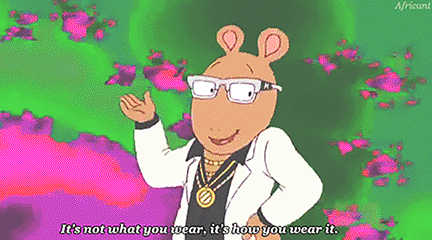
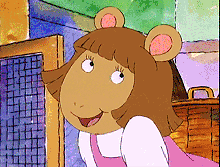
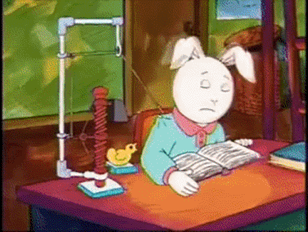

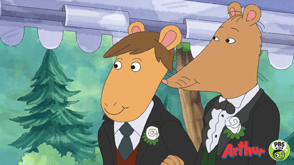
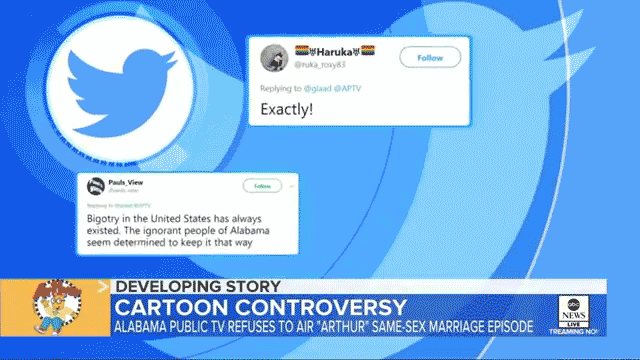
How did all the press surrounding Mr. Ratburn's wedding on the recent
season make you feel?
Oh my god it was like 99% positive and I remember opening up an email from a friend who was saying you’re blowing up twitter and do you know what’s happening? and I didn’t even know they were going to lead off the new season with that episode.
And it was exciting and we wanted to do an episode about Arthur’s teacher getting married. And the more we talked about it the more we thought we had an opportunity to do something important and be inclusive and break a little boundary that so many programs are afraid to do. So I’m really proud of that. In fact I just got our tickets for the Glaad Media Awards and the episode has been well-received.
Up for best children’s programming.
I don’t know all of my competitors so would be interesting to see what happens. Like all awards you smile and are happy for everyone else in the category.
"We had an opportunity to do something important and be inclusive and break a little boundary that so many programs are afraid to do."
What are some other projects you are working on?
I am working on a new book with my wife, Laurie called “Democracy for Dinosaurs.” That will be out this late summer in time for the election. We saw a real need for young children to have a beginning course in civics to understand what it means to be a citizen in our country and what kind of things they can do to take part in that. There aren’t any books for kids on that so we’re excited to put it out there.
Of course "Hop" is going to happen and will heat up rather quickly so I'll be busy with that.
The other day I was looking for a summer project for myself and I remembered this pickle, it was actually a cucumber that laurie had this summer from her garden and it looked like it had a nose and she put eyes on it and a mouth and it popped into my head and rather quickly this story developed in my head “Pickle grows a nose” and I sent it to one of my publishers and she said well it doesn’t quite fit because I designed it as a beginner reader and I thought it would appeal to that age level most easily and she said it’s hysterical but it’s not working with this line we’re doing so I sent it to my editor at Random House and she loved it and she gave me some notes on the story to tighten it up so it’s going to be a book.
It sort of came from a book I wrote back in the 70s when Tolon was learning to read and I was going from NY to Boston and it was 3: 00 in the morning and before I got on the train I bought a sandwich and it had a pickle and I started to think about pickles and I wrote a book on the train at night called “Pickle things” and it is still in print. Actually, Tolon just re-advised the art and made it look fresher and digitalized the art in a way that is great. It is back in print. For some reason It really resonated with teacher and kids and I still get letters about that book so I thought this is kind of the sequel to that book and making pickle more of a character.
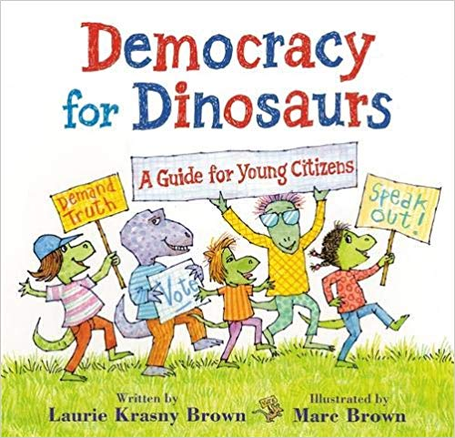
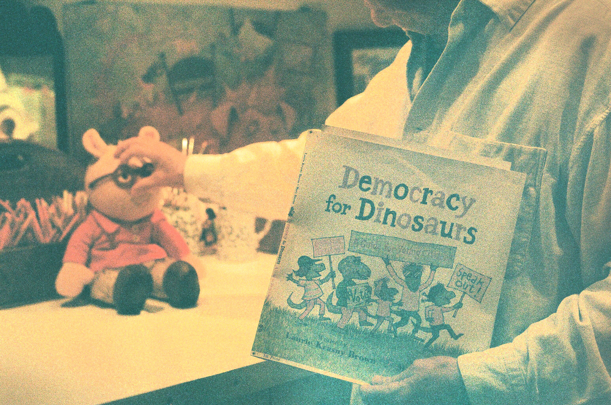
"We saw a real need for young children to have a beginning course in civics to understand what it means to be a citizen in our country and what kind of things they can do to take part in that. There aren’t any books for kids on that so we’re excited to put it out there."
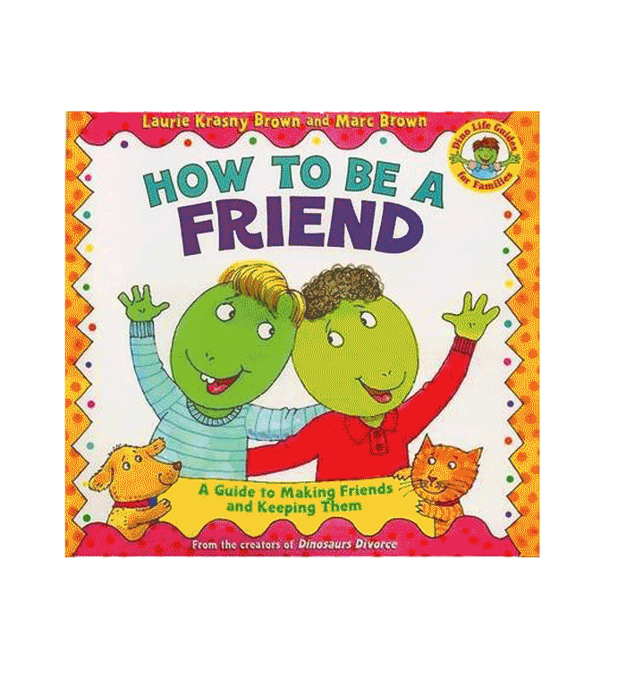
Where do you hope your work fits into society nowadays?
Have you seen anything change over the years with how
different groups react to the books?
I believe that children learn best through humor and what I think I do best is provide stories that educate and entertain at same time whether through books or television and that’s what excites me and what I like doing.
Arthur probably connects with people more because it’s been around longer and like I said earlier- it resonates with adults, young adults who grew up with it and kids! For the newer books, it’s going to take a while to really see how they connect.
That leads me to a problem I have with publishing today. That is there are books, children’s books are almost like Kleenex. There is all this thought and talent from so many wonderful people doing picture books for children that if they don’t connect almost immediately with booksellers and reviewers they are discarded and go out of print. We now have computers who decide when a book goes out of print, I find that really terrifying and sad. I’ve had books that sold over a million copies that go out of print because the rhythms of the computers say that this book has only sold so much in the past two months regardless of how much they’ve sold in total. I found that really too bad.
"We now have computers who decide when a book goes out of print, I find that really terrifying and sad."
You have so much fan mail and fan art! How do you like it?
I love it! I save it and if I never have the discipline to write an autobiography I’ll use, reproduce the Arthur pictures that kids have given me and use them on the end papers on the books, they are so wonderful. Each one I am so impressed the individuality and uniqueness of each Arthur is different how they do the eyes, ears, the glasses, the mouth I just find that amazing. I love that kids want to do that and want to send me new characters that I should be plugging in those stories.
Do you think Arthur is still relatable, 25 years later?
Yes, but when does it reach a point when it becomes unrelatable? Do you think it’s because the subject matter of the stories are what kids are dealing with? I love spinach. I used to eat my cousin’s spinach when my parents would go out of the room. Actually, that book came from my younger sister kim who was such a picky eater. But that issue is still very much a thing and clearly some topics of the show are still resonating with people after all this time.